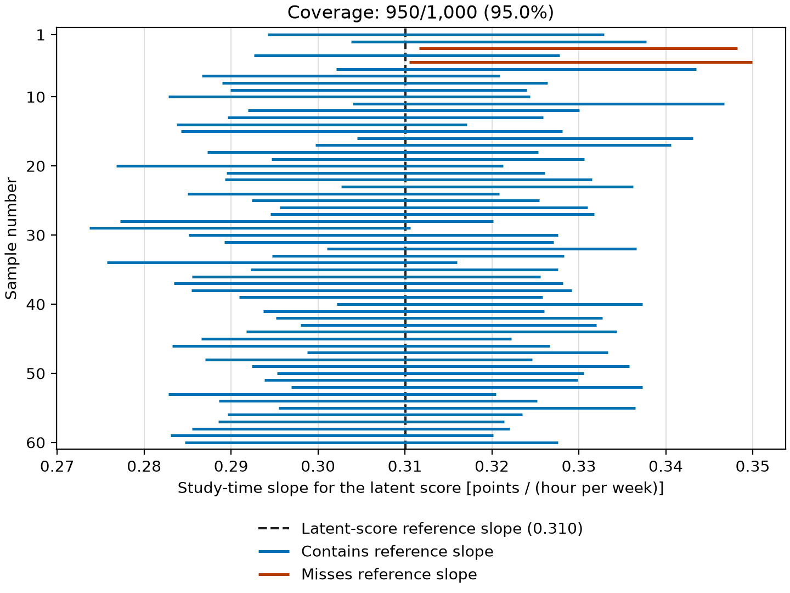

回帰係数の分布・信頼区間・検定
標本回帰式の傾きから, 母集団で x の値によって y の平均が変わるかを考えます. 母回帰式が直線なら, この問いは \beta_1\ne 0 かどうかを問うことにあたります. 帰無仮説 H_0:\beta_1=0 を検定するために, 傾きの推定量 \hat\beta_1 の確率分布を求めます.
傾きの標本分布
同じ母集団から標本を取り直すと, 標本ごとの回帰直線の図で見たように, 同じ計算をしても推定値は変わります. 推定値が標本によって変わる様子を表す分布を標本分布と呼びます. まず, 母回帰式が直線になる場合の分布を求めます.
標本中の説明変数を並べた \boldsymbol X=(X_1,\dots,X_n) の値を固定します. 古典的な単回帰モデルでは, この条件のもとで, 各誤差 \varepsilon_i が 互いに独立で, 同じ正規分布 N(0,\sigma^2) に従うと仮定します. 平均は 0, 分散はどの x_i でも同じ \sigma^2 です.
Y_i=\beta_0+\beta_1 x_i+\varepsilon_i を傾きの推定式に代入します. \sum_i(x_i-\bar x)=0 なので, 推定値と母数の差は誤差の重みつき和になります.
\hat\beta_1-\beta_1=\frac{\sum_{i=1}^n(x_i-\bar x)\varepsilon_i}{S_{xx}}.
条件つきで平均を取ると, 右辺は 0 です. 誤差が独立なので, 右辺の分散は各項の重みの二乗に \sigma^2 を掛けた値の和になります. 重みの二乗和は 1/S_{xx} です. したがって, 固定した \boldsymbol X のもとでの傾きの分布は次のとおりです.
\operatorname{Var}(\hat\beta_1\mid \boldsymbol X)=\frac{\sigma^2}{S_{xx}}, \qquad \hat\beta_1\mid\boldsymbol X \sim N\!\left(\beta_1,\frac{\sigma^2}{S_{xx}}\right).
誤差の分散が一定なら, x の散らばり S_{xx} が大きいほど傾きの分散は小さくなります.
切片の推定量は \hat\beta_0=\bar Y-\hat\beta_1\bar x です. 同じく \boldsymbol X を固定した単回帰モデルのもとで, 切片の期待値と分散は次のとおりです.
E(\hat\beta_0\mid\boldsymbol X)=\beta_0, \qquad \operatorname{Var}(\hat\beta_0\mid\boldsymbol X)=\sigma^2\left(\frac{1}{n}+\frac{\bar x^2}{S_{xx}}\right).
標準誤差と t 統計量
未知の誤差分散 \sigma^2 は, 残差の二乗和から推定します. 一般に, 切片と k 個の説明変数をもつ回帰式では, 独立な係数を k+1 個推定するので, 残差の自由度は n-k-1 です. 単回帰では k=1 なので, 自由度は n-2 です.
s^2 = \frac{\sum_{i=1}^n e_i^2}{n-k-1}.
この推定値の平方根 s を残差標準誤差と呼びます. 誤差の標準偏差 \sigma の推定値であり, 目的変数と同じ単位で残差の大きさを表します.
単回帰の傾きの標本分布の標準偏差 \sigma/\sqrt{S_{xx}} に s を代入します. 得られる \operatorname{SE}(\hat\beta_1)=s/\sqrt{S_{xx}} が傾きの標準誤差の推定値です. 正規性と等分散の仮定のもとでは, 傾きと s^2 は条件つきで独立で, (n-2)s^2/\sigma^2 は自由度 n-2 のカイ二乗分布に従います. このとき, 傾きの誤差を推定した標準誤差で割った統計量は t 分布に従います.
T=\frac{\hat\beta_1-\beta_1}{\operatorname{SE}(\hat\beta_1)} \ \sim\ t_{n-2} \qquad (\boldsymbol X \text{ を固定}).
95% 信頼区間の読み方
自由度 n-2 の t 分布の 97.5 パーセンタイルを t_{n-2,\,0.975} とすると, T がその正負の値の間に入る確率は 95% です. この不等式を \beta_1 について解くと, 次の95% 信頼区間になります.
\hat\beta_1 \ \pm\ t_{n-2,\,0.975}\operatorname{SE}(\hat\beta_1).
モデルの仮定が成り立つとき, 標本を取り直して毎回この式で区間を作ると, 長期的にはその 95% が母集団の傾き \beta_1 を含みます. 母集団の傾きは固定されており, 標本を変えると区間の両端が動きます.
信頼区間を繰り返し求める
架空の学生のデータは, 次の仕組みで作っています. 奨学生のときに 1, 非奨学生のときに 0 をとる変数を X_1, 週あたりの勉強時間を X_2, 週あたりのアルバイト時間を X_3 とします. まず, 学生ごとに潜在得点 Y^\ast を次の式で作ります.
Y^\ast = 0.5 + 0.6 X_1 + 0.25 X_2 - 0.1 X_3 + \varepsilon^\ast.
\varepsilon^\ast は学生ごとに独立に加える, 平均 0, 標準偏差 0.1 の正規分布の乱数です. 観測する GPA は, 潜在得点が 0 未満なら 0, 4 より大きければ 4 とし, その間では潜在得点と同じ値にします. この操作を打ち切りと呼びます. 打ち切りのため, 観測 GPA の条件つき平均は直線になりません. 例えば潜在得点が 4 を超えやすい条件では, 観測 GPA の平均は 4 に近づきます. そのため, 観測 GPA に当てはめた式の係数は, 潜在得点の式の係数とは異なります.
この仕組みから, 100 人の標本を独立に 1,000 回取りました. 各回で勉強時間だけを説明変数にし, 打ち切る前の潜在得点に最小二乗の直線を当てはめ, 通常の t 分布を使って傾きの 95% 信頼区間を求めます. 潜在得点の条件つき平均は直線で, 誤差の分散は勉強時間によらず一定です. t 区間の計算では, 奨学生区分による差を含む誤差の分布を正規分布で近似します.
母集団での傾きは, 別に生成した 20 万人から求めた最小二乗係数 (約 0.310) で近似します. 生成式の係数 0.25 は, 奨学生区分とアルバイト時間をそろえた比較です. 勉強時間とアルバイト時間には関連があるため, アルバイト時間をそろえない単回帰では傾きが変わります. 比較する条件と係数の関係は偏回帰係数とそろえる条件にあります.

横線 1 本が 1 標本の区間で, 図には最初の 60 本を標本を取った順に並べています. 横軸は勉強時間の係数で, 単位は週 1 時間あたりの潜在得点の差です. 黒い縦の破線と交わる青い区間は, 母集団の近似値を含みます. 破線と交わらない橙色の区間は近似値を外しています. 全 1,000 本では 950 本が近似値を含み, 被覆割合は 95.0% でした.
同じ標本の観測 GPA に同じ手順を使うと, 母集団の傾きの近似値 0.272 を含んだ区間は 1,000 本のうち 877 本 (87.7%) でした. 20 万人のうち約 12% が 0 か 4 で打ち切られています. 打ち切りによって条件つき平均が曲がり, 誤差の分散も勉強時間によって変わるため, 通常の t 区間の式が前提とする線形性と等分散性が崩れます.
傾きが 0 かを調べる
母集団の傾きが 0 かを調べる両側検定では, 帰無仮説を H_0:\beta_1=0, 対立仮説を H_1:\beta_1\ne 0 とします. T の式の \beta_1 に 0 を代入し, 観測値 t_{\mathrm{obs}} を求めます. P 値は, 帰無仮説とモデルの仮定のもとで, t 分布から得る統計量の絶対値が |t_{\mathrm{obs}}| 以上となる確率です.
同じ標準誤差と t 分布を使うと, P 値が 0.05 未満のとき, 95% 信頼区間には 0 が含まれません. 区間を見れば, 0 と整合するかに加え, どの程度の正負の差までデータと整合するかが分かります. 問いに沿って先に定めた式では, 5% 水準で有意かどうかにかかわらず, 係数と区間を報告します.
同じ係数をベイズで推定すると
ベイズ統計学では, 傾き \beta_1 などの母数に事前分布を置き, 観測データの出方を記述するモデルと組み合わせて事後分布を求めます. 95% 信用区間は, 観測データと仮定したモデル・事前分布のもとで, 母数がその範囲に入る事後確率が 95% となる区間です. 同じ 95% でも, 頻度論の信頼区間では標本を取り直す手順の被覆割合を指します. 事前分布と事後分布の計算はベイズの定理にあります.
ここまでの係数の推定値, 標準誤差, 信頼区間, P 値は, 統計のソフトウェアが係数の表として出力します. 単回帰分析では, OECD の出生率のデータで単回帰を行い, この表を読みます.
記号の一覧
確率変数は大文字, 観測値は小文字で書きます. 添字 i は学生などの観測単位, 添字 j は説明変数の番号です.
| 記号 | 意味 |
|---|---|
| Y, X | 目的変数と説明変数. 重回帰で X を説明変数の組として書くときは, その組を条件に取る |
| y_i, x_i | 第 i 番目に観測した目的変数と説明変数の値 |
| m(x) | 回帰式が表す平均. 説明変数が複数なら m(x_1,\dots,x_k) |
| E(Y\mid X) | 説明変数をそろえたときの, 目的変数の母集団での平均 |
| \beta_0,\beta_1,\dots,\beta_k | 母集団の係数. \beta_0 は切片, \beta_j は第 j 説明変数の係数. 単回帰の傾きは \beta_1 |
| \hat\beta_j | 第 j 係数の最小二乗推定量, または標本から計算した推定値 |
| \hat y_i | 標本回帰式を第 i 番目の観測値に当てはめた値 |
| \varepsilon_i | 第 i 番目の誤差. 目的変数と母集団での条件つき平均の差 |
| e_i=y_i-\hat y_i | 第 i 番目の残差 |
| \sigma^2 | モデルで仮定する, 共通の誤差分散 |
| s^2=\frac{1}{n-k-1}\sum_i e_i^2 | 誤差分散の推定値 |
| n | 標本の大きさ |
| k | 説明変数の数. 切片は含めない |